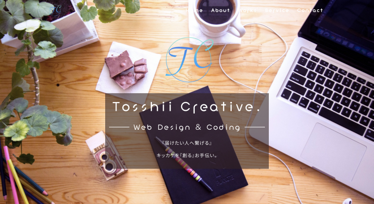

Tosshii
Creative.
Web Design
&
Coding
『届けたい人へ繋げる』
キッカケを『創る』お手伝い。
About Me
Profile
とっしー / Toshiki
岩手県釜石市出身。
工業高校卒業後、地元の空気圧機器メーカーに就職。
工場で11年半機械オペレーターを勤める。
２０代後半の時、今後の働き方を考える様になり、以前から
興味のあったWeb制作に挑戦したいと思い勉強を開始。
退職後は仙台へ拠点を移し、相棒のMacBookでコード
を書いています。
Webサイトでお困りごとがありましたらご相談下さい。
[作業環境]
PC：Mac OS
エディタ：VSCode
デザイン：Xd、Figma
画像加工：Photoshop
Skill
HTML / CSS / Bootstrap / Sass / JavaScript / jQuery
PHP / MySQL / WordPress
/ GitHub / STUDIO
Photoshop / Xd / Figma
My Works
今までの制作物を掲載しております。
-
【模写制作】
WordPressテーマ
「Lightning」を使用。
制作期間：１日
使用ツール：WordPressWordPressサイト
-
【模写制作】
WordPressテーマ
「Snow Monkey」を使用。
制作期間：１日
使用ツール：WordPressアクセサリーショップ「sobolon」様
-
【模写制作】
WordPressテーマ
「Snow Monkey」を使用。
制作期間：１日
使用ツール：WordPress、Figmaコワーキングスペース「ARROWSSS」様
-
 【オリジナル】
初めてワイヤーフレーム〜デザインカンプ〜コーディングまでを一貫して制作しました。
制作期間：１ヶ月
使用ツール：Xd、Photoshop、VSCodeポートフォリオサイト
-
【模擬案件】
ワイヤーフレームの状態をデザイン〜コーディングまで。
制作期間：１０日
使用ツール：Figma、Photoshop、VSCode -
【オリジナル】
WordPressテーマ
「Lightning」を使用。
制作期間：６日
使用ツール：WordPress、Photoshop -
【WordPress】
HTMLファイルをPHPに書き換え、
WordPress化しました。
制作期間：６日
使用ツール：VSCode -
【模写制作】
デザインカンプを模写
コーディングしました。
（レスポンシブ込み＋下層２ページ）
制作期間：６日
使用ツール：VSCode -
【オリジナル】
JavaScriptのアウトプットで制作。
if文とMath.random()を使い、「大吉」〜「凶」の中から、おみくじの結果を出力しています。
制作期間：６日
使用ツール：VSCode


{kind=link}
{kind=link}
{kind=link}
{kind=link}
{kind=link}
{kind=link}
{kind=link}
{kind=link}
{kind=link}